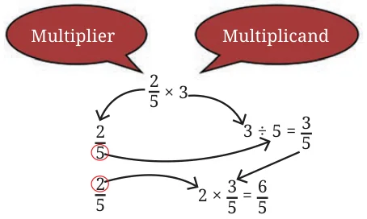

We did this multiplication as follows:
- •First, we divided the
multiplicand, 3 , by the denominator of the multiplier, 5, to get \(\frac{3}{5}\) .
- •We then multiplied the result by the numerator of the multiplier,
that is 2, to get \(\frac{6}{5}\) . Thus, whenever we need to multiply a fraction and a whole number, we follow the steps above. Example 1: A farmer had grandchildren. She distributed \(\frac{2}{3}\) acre of land to each of her grandchildren. How much land in all did she give to her grandchildren?

\(5 \times \frac{2}{3} = 23 + 23 + 23 + 23 + 23 = 103\) .
Example 2: 1 hour of internet time costs ₹8. How much will \(1 \frac{1}{4}\) hours of internet time cost?
\(1 \frac{1}{4}\) hours is 54 hours (converting from a mixed fraction). Cost of \(\frac{5}{4}\) hour of internet time \(= 54 \times 8\)
\(= 5 \times \frac{8}{4} = 5 \times 2 = 10\).
It costs ₹10 for \(1 \frac{1}{4}\) hours of internet time.